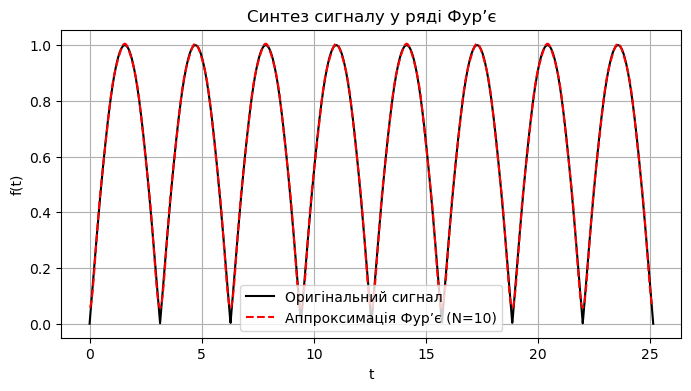

Мета: Закріпити теоретичні знання щодо моделювання періодичних сигналів за допомогою ряду Фур’є та різних систем базисних функцій, набути навичок гармонічного аналізу та синтезу.
Завдання для самостійної роботи
Згідно із заданим варіантом розглянути періодичний сигнал та розкласти його спочатку:
У тригонометричний ряд Фур’є, отримавши коефіцієнти ряду ak та bk. Виконати синтез сигналу. Побудувати відповідні графіки.
У тригонометричний ряд Фур’є, отримавши коефіцієнти Ak, φk. Побудувати амплітудний та фазовий спектр. Виконати синтез сигналу.
У комплексний ряд Фур’є. Побудувати амплітудний та фазовий спектри. Виконати синтез сигналу.
У ряд Фур’є за системою базисних функцій Уолша–Пелі.
Кількість гармонік: N = 8 – 10. Побудувати відповідний спектр сигналу. Виконати синтез сигналу.
Синтезувати (відновити) сигнали у кожному базисі. Зобразити на одному графіку вихідний сигнал, синтезований за допомогою тригонометричного ряду Фур’є та синтезований за допомогою базису Уолша–Пелі.
Обчислити норму похибки апроксимації для кожного з базисів для одного й того самого значення N. Зробити висновки щодо якості апроксимації кожним з методів.
# 2. Тригонометричний ряд Фур’єdef fourier_series(t, N): a0 =4/np.pi result = a0/2for k inrange(2, N+1, 2): # тільки парні k ak =-4/(np.pi*(k**2-1)) result += ak * np.cos(k*t)return resultN =10f_approx = fourier_series(t, N)plt.figure(figsize=(8,4))plt.plot(t, f, label="Оригінальний сигнал", color="black")plt.plot(t, f_approx, "--", label=f"Аппроксимація Фур’є (N={N})", color="red")plt.title("Синтез сигналу у ряді Фур’є")plt.xlabel("t")plt.ylabel("f(t)")plt.legend()plt.grid(True)plt.show()

# 3. Амплітудний і фазовий спектриa_vals = []k_vals = []for k inrange(1, N+1):if k %2==0: ak =-4/(np.pi*(k**2-1))else: ak =0 a_vals.append(ak) k_vals.append(k)A_vals = np.abs(a_vals)phi_vals = [0if a >=0else np.pi for a in a_vals]plt.figure(figsize=(10,4))plt.stem(k_vals, A_vals, basefmt=" ")plt.title("Амплітудний спектр")plt.xlabel("k")plt.ylabel("A_k")plt.grid(True)plt.show()plt.figure(figsize=(10,4))plt.stem(k_vals, phi_vals, basefmt=" ")plt.title("Фазовий спектр")plt.xlabel("k")plt.ylabel("phi_k")plt.grid(True)plt.show()
Як впливає симетрія періодичного сигналу (парна, непарна, відсутність симетрії) на структуру його тригонометричного ряду Фур’є? Наведіть приклади коефіцієнтів ak та bk, які стають нульовими у кожному випадку.
Якщо сигнал парний, то в ньому лишаються тільки косинуси, тобто коефіцієнти bk=0. Якщо сигнал непарний, то залишаються тільки синуси, тобто ak=0. Якщо ж сигнал без симетрії, то є і синуси, і косинуси.
Приклад:
f(t)=cos(t) → тільки ak
f(t)=sin(t) → тільки bk
f(t)=1+sin(t) → і ak, і bk
Чому для апроксимації прямокутного імпульсу базис Уолша–Пелі часто забезпечує меншу похибку порівняно з базисом Фур’є при однаковій кількості базисних функцій? Поясніть з точки зору властивостей базисних функцій.
Бо функції Уолша–Пелі теж мають прямокутний вигляд (вони кусочно-постійні), і вони краще “підходять” до форми прямокутного сигналу. У тригонометричному базисі (синуси/косинуси) сигнал виходить згладжений і треба більше гармонік, щоб добре відновити. А в Уолша–Пелі кілька функцій уже майже точно повторюють прямокутну форму → похибка менша.
Як пов’язані між собою три форми ряду Фур’є (тригонометрична, амплітудно-фазова, комплексна)? Поясніть, як за коефіцієнтами ak і bk обчислити амплітуду Ak фазу φk та комплексний коефіцієнт ck.
Тригонометрична форма має ak, bk. Амплітудно-фазова: Ak = √(ak²+bk²), φk=arctan(-bk/ak). Комплексна: ck=ak/2 - j·bk/2.
Що таке узагальнений ряд Фур’є? Наведіть умови, за яких система функцій є ортонормованою, і поясніть, чому це важливо для розкладу сигналу.
Це коли замість стандартних синусів і косинусів ми беремо будь-яку ортонормовану систему функцій (наприклад, поліноми Лежандра, функції Уолша тощо). Умова: система має бути ортонормованою на заданому проміжку. Це важливо, бо тільки тоді можна розкласти будь-який сигнал/функцію по такій системі, і коефіцієнти можна легко знаходити.
Чи можна використовувати базис Уолша для апроксимації гладкого синусоїдального сигналу? Яка буде похибка порівняно з базисом Фур’є? Обґрунтуйте.
Можна, але це буде не дуже ефективно. Бо синусоїда — це гладка, плавна функція, а базис Уолша кусочно-постійний. Тому для гарної точності треба буде брати багато базисних функцій → похибка буде більша, ніж у базисі Фур’є, де синус вже є “рідним” елементом. Отже, так можна, але для синусів краще тригонометричний ряд.